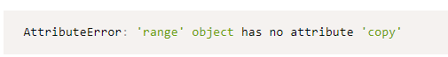
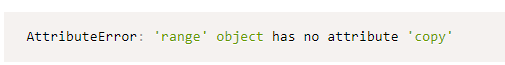

קיבלתי שגיאה מהבודק ואני מניחה שהכוונה היא שהפונקציה שלי לא עובדת על range.
range עד כמה שאני מצליחה להבין איננו iterable ולכן אני קצת לא יודעת איך להמשיך מכאן.
יכול להיות שאני לא מבינה נכון את השגיאה?
מסתירה כי זה יכול להיות ספויילר:


קיבלתי שגיאה מהבודק ואני מניחה שהכוונה היא שהפונקציה שלי לא עובדת על range.
range עד כמה שאני מצליחה להבין איננו iterable ולכן אני קצת לא יודעת איך להמשיך מכאן.
יכול להיות שאני לא מבינה נכון את השגיאה?

דווקא range הוא לגמרי iterable, וכראיה, אפשר לעבור על איבריו עם for 
(כהבהרה: range עצמו לא, אבל מה שהיא מחזירה כן:
for i in range(10):
print(i)
)
אוקיי אז אני קצת לא מצליחה להבין איך לשלב את זה בכלל בפילטר.
נניח אני עושה range עד 10 ורוצה לפלטר על פי תנאי כלשהו, איך אני יכולה לדעת מה לשנות בפלט בצורה כללית, מבלי לדעת מראש מה הפונקציה על פיה אני רוצה לפלטר? כי זה לא true/false, זה ממש שינוי של הפונקציה range.
כמה פרמטרים יש לך? לאיזה מהם הגיוני שיעבירו range?
שניים, פונקציה ואיטרבל. אז ה-range יהיה באיטרבל, ואצטרך להחזיר range חדש ושונה על פי הפונקציה.
אני לא מבינה איך להפעיל את הפונקציה הזו על ה-range כשאין לו את הפעולות שיש לשאר הiterables (copy, remove וכולי)
מאיזה סיבה תצטרכי לעשות ל-iterable בתרגיל copy?
כך בניתי את הפונקציה שלי, מעתיקה את האיטרבל ומוציאה מהעותק את מה שצריך לפלטר. אבל אם אין ברירה אעשה את זה אחרת 
בעיקר בשביל לשמר את הטייפ של האיטרבל למען האמת.
שורה תחתונה אני לא מצליחה לדמיין פונקציה, מלבד “תעיפי את כל האיברים אחרי האיבר ה-X”, שאם אפעיל אותה על range אני אוכל גם להחזיר range.
ואני לא מבינה איך לממש בדיקה על הפונקציה בארגומנט למה שהיא עושה ואיך להפעיל אותה על ה-range.
לא הבנתי, למה צריך range, או להחזיר range ?
מציעה לקרוא שוב מה filter עושה, ולעבוד לפי זה
רמז: פילטר צריכה לעבוד עבור range בדיוק כמו עבור כל פונקציה אחרת, אין משמעות דווקא ל “range” בהקשר הזה
קראתי מה פילטר עושה. מקבלת פונקציה ואיטרבל, מחזירה איטרבל מאותו הסוג ללא האיברים עבורם הפונקציה מחזירה False.
הסיבה שצריך range, ולהחזיר range, זה כי range הוא איטרבל שאפשר להפעיל עליו filter. הפילטר שבניתי עובד מעולה, רק לא על range, והבודק האוטומטי נתן לי על זה שגיאה.
מה שחוזר מריינג range הוא הרי כמו שכבר נאמר iterable, ועל משתנים מהסוג הזה אפשר לעבור בלולאה (כפי שכבר נלמד וכפי שים הציג פה בקורד)
הפונקציה פילטר סה"ר מחזירה איברים מסויימים אשר מחזירים את הערך True מפונקציה או בכלל, במבנה נתונים שיכול להכיל מספר איברים (למדנו על כמה כאלה)
ולכן לא צריכה להיות לך הבדלה או התייחסות בין אם נכנס לתוך הפונקציה range או אם נכנס אליה list או כל iter אחר.
נסי לחשוב מה משותף לכולם ועל זה מהמקום הזה תעבדי.